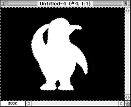
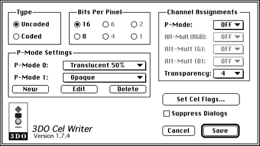
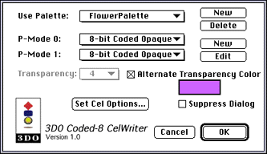
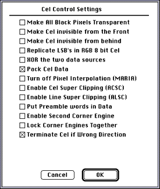

Cels are, by default, rectangular. In most situations, however, you don't
want to move a rectangle around the screen but want to move an object like
a UFO, a person, or a fish.
The 3DO hardware makes it easy to create irregularly shaped cels by
offering two special features:
The hardware interprets all black pixels in a cel as transparent
pixels by default.
The hardware allows you to mark certain pixels in the cel explicitly
as transparent using a special color.
Note: Using a special color is only possible for packed cels
and currently implemented only for the Coded-8 CelWriter. It is, however,
the most efficient way of creating an irregularly shaped cel.
As a result, you can create irregularly shaped cels two ways; and you will
learn:
To create an irregularly shaped cel with no true black-3DO hardware
interprets black as transparent-follow these steps:
From the Image menu, choose Adjust, then Levels, from the submenu, and
drag the Output Levels slider slightly to the right until the value is 9.
(Alternately, change the Output Level from 0 to 9.)
This changes all black pixels (RGB 0-0-0) to mostly black (RGB 9-9-9)
in the source art. The result on the TV screen will in most cases look
black to the viewer.
Select the object you want to mask with the Magic Wand tool.
Double-click on the Magic Wand tool and make sure Tolerance is set to
4 and anti-aliased is checked.
Note that while these settings work well in many situations, you may
decide to adjust them.
From the Select menu, choose Inverse.
From the Select menu, choose Save Selection.
From the Window menu, choose Show Channels and select the mask channel
in the Channels window to check the mask.

Figure 1: Example for creating a mask for transparency.
In the example in the figure above, the area surrounding the penguin
is marked to become transparent.
From the File menu, choose Export > 3DO CelWriter and use the
following settings in the dialog:
Set the Transparency pop-up menu to the channel you just created.
Make sure the Transparency channel is not used by one of the other
options, such as P-Mode. Consider setting the P-Mode channel to Off.

Figure 2: CelWriter dialog for saving a transparent
channel.
Click Set Cel Flags and make sure that Make All Black Pixels
Transparent is checked.
If you save a packed 8-bit coded cel, you can use a special color that
does not appear often in source art-such as hot pink (255 0 255)-to
specify in the source art which pixels should be transparent.
Note: Using a packed cel and a special color is by far the most
efficient way of creating an irregularly shaped cel.
To create an irregularly shaped cel using a special color in the Coded-8
CelWriter, follow these steps:
Open your source art in Adobe Photoshop.
Decide on a color you want to use for transparency and apply it to all
regions of the cel you want transparent. Check that you don't create holes
in your cel-unless that's your intent.
Choose Export > Coded-8 CelWriter.
In the dialog that appears, check the Alternate Transparency Color
box.

Figure 3: Coded-8 CelWriter dialog using an alternate
Transparency color.
Click on the color box and select the color you want to use for
Transparency using the standard Macintosh Color Picker.
Note that the color picker displays 16-bit values from 0 to 65535. To
use Photoshop color values, multiply by 16 before entering the value. For
example, 255 0 255 becomes 65535 0 65535.
Click on Set Cel Options and make sure that Pack Cel Data is checked
and Make Black Pixels Transparent is not checked, then choose OK to
save the cel.

Figure 4: Cel Control Settings dialog for saving a packed 8-bit
coded cel.